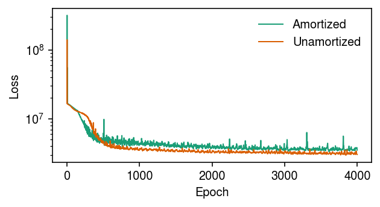
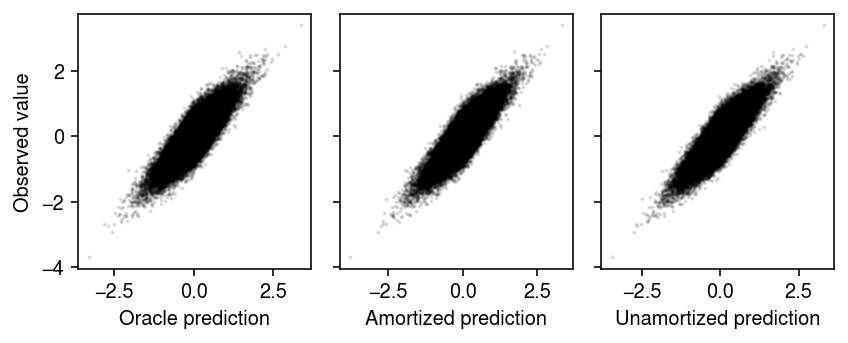

VAEs without amortized inference
Table of Contents
Introduction
Variational autoencoders (VAEs) are latent variable models \( \DeclareMathOperator\diag{diag} \DeclareMathOperator\E{E} \DeclareMathOperator\N{\mathcal{N}} \newcommand\mb{\mathbf{B}} \newcommand\me{\mathbf{E}} \newcommand\mi{\mathbf{I}} \newcommand\mr{\mathbf{R}} \newcommand\msigma{\boldsymbol{\Sigma}} \newcommand\mw{\mathbf{W}} \newcommand\mx{\mathbf{X}} \newcommand\my{\mathbf{Y}} \newcommand\vb{\mathbf{b}} \newcommand\vm{\mathbf{m}} \newcommand\vs{\mathbf{s}} \newcommand\vmu{\boldsymbol{\mu}} \newcommand\vphi{\boldsymbol{\phi}} \newcommand\vtheta{\boldsymbol{\theta}} \newcommand\vx{\mathbf{x}} \newcommand\vz{\mathbf{z}} \)
\begin{align} \vx_i \mid \vz_i, \vtheta &\sim \N(f(\vz_i), \sigma^2 \mi)\\ \vz_i &\sim \N(\boldsymbol{0}, \mi), \end{align}where \(f\) denotes a neural network with \(k\)-dimensional input and \(p\)-dimensional output, and \(\vtheta\) denotes \(\sigma^2\) and the parameters of \(f\). As a simple example, suppose \(f\) is a fully-connected feed-forward network with one hidden layer and a linear output layer, which can be written
\begin{equation} f(\vz_i) = \mw_1 h(\mw_0 \vz_i + \vb_0) + \vb_1, \end{equation}where \(h\) is a non-linearity (say, ReLU) applied element-wise. In this case, \(\vtheta = (\sigma^2, \mw_0, \mw_1, \vb_0, \vb_1)\), and the VAE is a non-linear version of PPCA. Specifically, one generates observations \(\vx_i\) by applying the non-linear transform \(f\) to the low-dimensional latent variable \(\vz_i\), and then adding multivariate Gaussian noise with covariance \(\sigma^2 \mi\).
How does one estimate \(\vtheta\) from observations \(\vx_1, \ldots, \vx_n\)? One solves the optimization problem
\begin{equation} \hat\vtheta = \arg\max_{\vtheta} \sum_{i=1}^n \ln \left(\int_{\mathcal{Z}} p(\vx_i \mid \vz_i, \vtheta)\, dp(\vz_i \mid \vtheta)\right), \end{equation}where \(\mathcal{Z}\) denotes the set of values \(\vz_i\) can take; this problem is termed empirical Bayes. In the case of VAEs, the integrals are not tractable, so one uses variational empirical Bayes (Wang et al. 2019, Wang et al. 2020), assuming an approximating posterior family that is multivariate Gaussian with diagonal covariance
\begin{equation} q(\vz_i \mid \vm_i, \vs_i) = \N(\vm_i, \diag(\vs_i^2)). \end{equation}In practice, a more complex scheme termed amortized inference (Gershman and Goodman 2014) is used, in which \(q\) parameterized by a neural network, termed the encoder network (since it “encodes” \(\vx_i\) to produce \(\vz_i\))
\begin{equation} q(\vz_i \mid \vx_i, \vphi) = \N(m(\vx_i), \operatorname{diag}(s^2(\vx_i))), \end{equation}where \(m, s^2\) are each \(k\)-dimensional outputs of a neural network taking \(p\)-dimensional input, denoting the mean and diagonal of the covariance matrix, respectively.
Here, we demonstrate the simple, unamortized inference scheme for VAEs, in which variational parameters \(\vm_i, \vs_i\) are directly stored.
Setup
import numpy as np import torch
%matplotlib inline %config InlineBackend.figure_formats = set(['retina'])
import matplotlib.pyplot as plt plt.rcParams['figure.facecolor'] = 'w' plt.rcParams['font.family'] = 'Nimbus Sans'
Implementation
class Decoder(torch.nn.Module): """Decoder p(x | z) ~ N(f(z), sigma^2 I)""" def __init__(self, input_dim, output_dim, hidden_dim=128): super().__init__() self.f = torch.nn.Sequential( torch.nn.Linear(input_dim, hidden_dim), torch.nn.ReLU(), torch.nn.Linear(hidden_dim, hidden_dim), torch.nn.ReLU(), torch.nn.Linear(hidden_dim, output_dim), ) def forward(self, x): return self.f(x) def kl_term(mean, scale): """KL divergence between N(mean, scale) and N(0, 1)""" return .5 * (1 - 2 * torch.log(scale) + (mean * mean + scale * scale)) class UVAE(torch.nn.Module): """VAE fit via unamortized inference""" def __init__(self, num_obs, input_dim, latent_dim): super().__init__() self.q_mean = torch.nn.Parameter(torch.zeros([num_obs, latent_dim])) self.q_scale_raw = torch.nn.Parameter(torch.zeros([num_obs, latent_dim])) self.residual_scale_raw = torch.nn.Parameter(torch.zeros([1])) self.decoder = Decoder(latent_dim, input_dim) def forward(self, x, n_samples): # TODO: implementing SGD for this requires hacking # torch.util.data.DataLoader scale = torch.nn.functional.softplus(self.q_scale_raw) # Important: this is analytic kl = torch.sum(kl_term(self.q_mean, scale), dim=1) # [n_samples, batch_size, latent_dim] qz = torch.distributions.Normal(self.q_mean, scale).rsample(n_samples) # [n_samples, batch_size, input_dim] mu = self.decoder.forward(qz) residual_scale = torch.nn.functional.softplus(self.residual_scale_raw) error = torch.distributions.Normal(loc=mu, scale=residual_scale).log_prob(x).mean(dim=0).sum() # Important: optim minimizes loss = -torch.sum(error - kl) return loss def fit(self, x, num_epochs, n_samples=10, **kwargs): """Fit the model x - training data torch.tensor [n_cells, n_genes] num_epochs - number of epochs n_samples - number of samples used in estimating stochastic gradients kwargs - arguments to torch.optim.RMSprop """ self.trace = [] assert torch.cuda.is_available() self.cuda() x = x.cuda() n_samples = torch.Size([n_samples]) opt = torch.optim.RMSprop(self.parameters(), **kwargs) for epoch in range(num_epochs): opt.zero_grad() loss = self.forward(x, n_samples=n_samples) if torch.isnan(loss): raise RuntimeError('nan loss') with torch.no_grad(): self.trace.append(loss.cpu().numpy()) loss.backward() opt.step() return self class Encoder(torch.nn.Module): """Encoder q(z | x) = N(m(x), diag(S(x)))""" def __init__(self, input_dim, output_dim, hidden_dim=128): super().__init__() self.net = torch.nn.Sequential( torch.nn.Linear(input_dim, hidden_dim), torch.nn.ReLU(), torch.nn.BatchNorm1d(hidden_dim), torch.nn.Linear(hidden_dim, hidden_dim), torch.nn.ReLU(), torch.nn.BatchNorm1d(hidden_dim), ) self.mean = torch.nn.Linear(hidden_dim, output_dim) self.scale = torch.nn.Sequential(torch.nn.Linear(hidden_dim, output_dim), torch.nn.Softplus()) def forward(self, x): q = self.net(x) return self.mean(q), self.scale(q) class VAE(torch.nn.Module): """VAE fit via amortized inference""" def __init__(self, input_dim, latent_dim): super().__init__() self.residual_scale_raw = torch.nn.Parameter(torch.zeros([1])) self.encoder = Encoder(input_dim, latent_dim) self.decoder = Decoder(latent_dim, input_dim) def forward(self, x, n_samples): mean, scale = self.encoder.forward(x) # Important: this is analytic kl = torch.sum(kl_term(mean, scale), dim=1) # [n_samples, batch_size, latent_dim] qz = torch.distributions.Normal(mean, scale).rsample(n_samples) # [n_samples, batch_size, input_dim] mu = self.decoder.forward(qz) residual_scale = torch.nn.functional.softplus(self.residual_scale_raw) error = torch.distributions.Normal(loc=mu, scale=residual_scale).log_prob(x).mean(dim=0).sum() # Important: optim minimizes loss = -torch.sum(error - kl) return loss def fit(self, x, num_epochs, n_samples=10, **kwargs): """Fit the model x - training data torch.tensor [n_cells, n_genes] num_epochs - number of epochs n_samples - number of samples used in estimating stochastic gradients kwargs - arguments to torch.optim.RMSprop """ self.trace = [] assert torch.cuda.is_available() self.cuda() x = x.cuda() n_samples = torch.Size([n_samples]) opt = torch.optim.RMSprop(self.parameters(), **kwargs) for epoch in range(num_epochs): opt.zero_grad() loss = self.forward(x, n_samples=n_samples) if torch.isnan(loss): raise RuntimeError('nan loss') with torch.no_grad(): self.trace.append(loss.cpu().numpy()) loss.backward() opt.step() return self
Simulated example
For simlicity, simulate from a linear factor model.
n = 200 p = 500 k = 3 rng = np.random.default_rng(1) l = rng.normal(scale=0.5, size=(n, k)) f = rng.normal(scale=0.5, size=(p, k)) x = rng.normal(loc=l @ f.T, scale=0.3) xt = torch.tensor(x, dtype=torch.float)
Fit VAE via both amortized and unamortized inference.
fits = { 'Amortized': VAE(p, k).fit(xt, num_epochs=4000), 'Unamortized': UVAE(n, p, k).fit(xt, num_epochs=4000) }
Plot the evolution of the loss function over the inference algorithm.
cm = plt.get_cmap('Dark2') plt.clf() plt.gcf().set_size_inches(4.5, 2.5) plt.yscale('log') for i, name in enumerate(fits): plt.plot(fits[name].trace, lw=1, c=cm(i), label=name) plt.legend(frameon=False) plt.xlabel('Epoch') plt.ylabel('Loss') plt.tight_layout()

Remark Cremer et al. 2018 discuss the “amortization gap” we observe here, that results from the fact that the encoder network produces suboptimal variational parameters for each data point.
Compare the fitted values with the observed values.
plt.clf() fig, ax = plt.subplots(1, 3, sharey=True) fig.set_size_inches(6, 2.5) ax[0].scatter((l @ f.T).ravel(), x.ravel(), s=1, c='k', alpha=0.1) ax[0].set_xlabel('Oracle prediction') ax[0].set_ylabel('Observed value') with torch.no_grad(): xhat = fits['Amortized'].decoder(fits['Amortized'].encoder(xt.cuda())[0]).cpu().numpy() ax[1].scatter(xhat.ravel(), x.ravel(), s=1, c='k', alpha=0.1) ax[1].set_xlabel('Amortized prediction') with torch.no_grad(): xhat = fits['Unamortized'].decoder(fits['Unamortized'].q_mean).cpu().numpy() ax[2].scatter(xhat.ravel(), x.ravel(), s=1, c='k', alpha=0.1) ax[2].set_xlabel('Unamortized prediction') fig.tight_layout()
